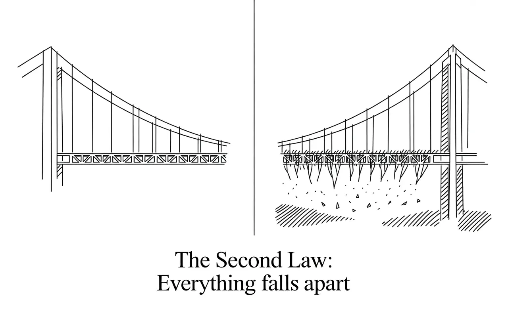
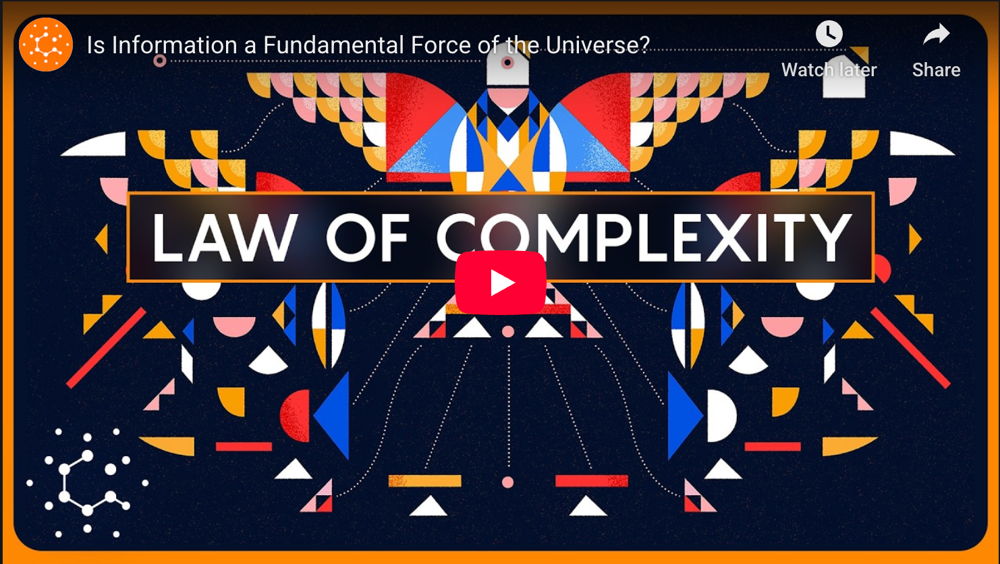

How Does Order Emerge in a Universe Built for Chaos?
The universe writes in entropy, but you're an improbable paragraph. Physics can explain why everything falls apart but not why complex things like you exist in the first place. The universe's greatest paradox awaits.


None of the laws of physics explain all of the wonderful complexity of the universe around us. Something is missing.
— According to Robert Hazen, a mineralogist mapping the deep patterns nobody else bothered to notice, finally naming what the universe has been doing all along: building functional information deliberately, relentlessly, through nothing but physics.

The Token Wisdom Rollup ✨ 2025
One essay every week. 52 weeks. So many opinions 🧐

Physics Has No Answer
Entropy says disorder wins, and yet here you are, being interesting…
Life is a masterclass in demolition. That bridge you built? Coming down. That person you adore? Dust, eventually. That system you designed? Unraveling now. The second law of thermodynamics promises entropy always increases and disorder wins.

Your shoes scuff, no one can unscramble an egg, and you most certainly cannot put the toothpaste back in the tube. Seth Lloyd at MIT drops the science:
"Nothing in life is certain except death, taxes and the second law of thermodynamics,"
13.8 BHowever, if we look up and recognize the universe is 13.8 billion years old and entropy should have won by now, no? Instead, it got more…However, if we look up and recognize the universe is 13.8 billion years old and entropy should have won by now, no? Instead, it got more interesting. The Big Bang gave us nothing, just undifferentiated particle soup. But particles became protons and neutrons. Those became atoms. Atoms became molecules. Stars forged planets. Planets grew minerals, atmospheres, oceans and life bootstrapped itself from chemistry. Cascading into bootstrapped language, art, technology from biology. We now design computer programs that design themselves.
Entropy predicts exactly none of this. The second law stands apart, the only one hardwired with time's direction. And that arrow points relentlessly toward chaos, not complexity.
So why does the universe keep producing order?
The Missing Law
Robert Hazen thinks we've been working with an incomplete rulebook. He's proposing an eleventh law, one operating in plain sight since the Big Bang.
Call it the Law of Increasing Functional Information.
https://www.youtube.com/watch?v=WqYRMmlZmhM
142 bThe functional information for Earth's minerals today: 142 bitsThe core idea: information is as fundamental as mass or energy. Systems universally evolve toward greater functional complexity through something like natural selection, but applying to everything, not just biology.
"I always had this unsettled feeling that something was missing," Hazen said. "None of the laws explained all the wonderful complexity around us."
The proposed law: Any system made of diverse interacting components, in an environment where some configurations persist better than others, drives toward increasing functional information. The system grows more complex, enriched in whatever functions help it survive.
Three ingredients: diverse components, mechanisms creating variations, environmental filters favoring function over chaos. Meet these conditions and you get evolution, not just Darwin's version, but a universal principle sculpting reality since the Big Bang's first femtoseconds.

Functional information measures how rare it is for a system to perform a specific function.
Earth's minerals come from 72 elements. Combine them randomly and mathematically you could get 10^46 configurations, basically infinity by any practical measure. Yet reality shows up with 6,000. The universe had nearly infinite choices and picked a fraction of a percent.
Why? Because nature selects for stability. Most possible combinations of atoms don't form stable crystals, they fall apart. The configurations that persist are the ones that work. The ones that have function.
The functional information for Earth's minerals today: 142 bits.
N.B. that number has increased over time.
250 miEarly Earth had 250 minerals and today we’veEarly Earth had 250 minerals and today we’ve. got 6,000. As new processes have emerged like plate tectonics, the presence of water, and the arrival of life allowed for the planet to gain new ways to make minerals. Functional information went up.
You can chart functional information rising across geological epochs, in lab flasks, in computer simulations, in human languages. This isn't theory. It's measurable.
The universe has been computing solutions to functional problems for 13.8 billion years.
Not Purpose, Just Persistence
Here's the trap: "selection for function" sounds like the universe has goals. Intentions.
It doesn't.
"Think about gravity," Hazen explains. "Without it, we wouldn't have stars. But gravity doesn't 'want' to make stars. The laws of physics aren't scheming. That's just matter doing what matter does."
Selection happens through three mechanisms, none of which require intention:
Static persistence: Stable atomic nuclei. Crystal structures maintaining geometry for millions of years. They endure not because they're trying to, they just happened to land on a configuration that works.
Dynamic persistence: Some systems maintain their order through constant turnover, like a whirlpool that keeps its shape while water molecules rush through it. You: hardly any atoms in your body today were there a decade ago. Yet here you are, persisting because your patterns persisted.
Novelty generation: Through blind variation, systems stumble onto new tricks. Vision in primitive eye spots. Fins reshaping into limbs. Neural circuits enabling learning. New capabilities open inaccessible spaces. The system persists because it accidentally found something that works.

None of this requires a designer. It just requires components, recombination, and time.
The Paradox Remains
The second law hasn't been repealed. Entropy still wins. Every star burning today becomes tomorrow's diffuse cloud. Every structure—redwood trees, Roman aqueducts, the Taj Mahal—borrows order before returning it, with interest. We're entropy's foot soldiers.
But increasing functional information is consistent with entropy, not contradictory.
Traditional information theory counts bits needed to describe a system. Scramble War and Peace into alphabet soup and you still need the same number of bits. Nothing gained, nothing lost.
But functional information is different. It measures how many configurations actually do something. And that number can increase over time, even as entropy increases, because the two are measuring different things.
The second law governs closed systems marching toward equilibrium. But the universe isn't closed. Neither is Earth. Neither are you. Open systems can build spectacular pockets of order—temporary, but real—while still contributing to the universe's overall entropy tab.

The second law alone can't explain why local order gets so intricate, so interesting. "Let's take the second law and try to explain the origin of life," one researcher said. "It doesn't work. There has to be something else."
The Uncomfortable Truth
Is the proposed law correct? Hazen hedges. "It's not a complete theory yet," he acknowledges. "We could always be completely wrong."
But here's what can't be wrong: the second law alone doesn't explain complexity. If entropy plus chance plus time were sufficient, we'd have cracked the origin of life. We'd understand mineral diversification. We'd have unified frameworks for why stars, ecosystems, and technologies follow similar patterns.
We have none of that.
Even if Hazen's wrong, he's reframed the question. For two centuries we've asked: "Why does everything fall apart?"
The law of increasing functional information flips it: "Why does anything persist?"
6,000 miWhat accounts for 6,000 minerals instead of a barren rock? How did stars ignite at all? Where did life come from if chemistry alone…What accounts for 6,000 minerals instead of a barren rock? How did stars ignite at all? Where did life come from if chemistry alone sufficed? These aren't rhetorical flourishes. Physics doesn't answer them.
Physics can can tell you exactly how long the sun has left to burn but it still can't tell you why it ignited in the first place. It’s a formula for decay. It has nothing for persistence.
What Does It All Mean?
Yes, everything breaks. Your shoes will wear out. The people you love will die. Every structure you build will eventually crumble.
But before it breaks, it has to exist.

And the fact that anything exists at all—that atoms clicked into stable patterns, that patterns built minerals, that minerals became living cells, that cells now process these words—might not be cosmic accident.
This persistence is written into the fabric of existence. Not aberration. Not accident. Not glitch. The universe doesn't tolerate complexity with a grudge—it actively constructs it.
You're a collection of cells that somehow assembled itself from simpler pieces, stays intricate despite everything working to tear it apart, and now reads and thinks about how it got here.
Your cells coordinate through chemistry. They're not performing anything—they're just doing what billions of years of selection pressure taught them to do. That's what functional information looks like at scale. Not a miracle. Not an accident. Just matter organized in a way that persists because it works.
It's what matter does when given components, time, and selection pressure.
The universe isn't grudgingly creating complexity as a side effect. It's running two programs: maximizing entropy AND maximizing functional information. Decay and creation aren't enemies, they're partners, each enabling the other across different scales.
The arrow of time might have two points. Entropy describes the journey toward disorder. Functional information charts another trajectory, toward configurations that do more with less, that persist against odds, that matter.
Look around. The device you're reading on. The chair supporting you. The thoughts forming. None inevitable, each represents functional persistence against overwhelming odds. Matter and energy finding ways to be interesting.
Our drive to create, to build, to find meaning, not aberration. It's the same principle operating since the Big Bang. We're the universe maximizing functional information, finding configurations that persist because they work in ways nothing has worked before.
For two centuries, entropy haunted us, that grim accountant tallying decay. Now the reverse puzzle: in a cosmos destined for uniformity, why galaxies, planets, whales, symphonies, particle accelerators? Why does anything worth noticing exist?
Physics has no answer.
Physics has been asking the wrong question. Entropy explains why everything dies. Hazen's law might explain why anything gets to live.
We've mapped decay with precision. Measured how order dissolves.
What we haven't explained is why the universe keeps trying anyway.
Want Hazen to explain it himself?

Don't miss the weekly roundup of articles and videos from the week in the form of these Pearls of Wisdom. Click to listen in and learn about tomorrow, today.


Sign up now to read the post and get access to the full library of posts for subscribers only.
 🌶️ iamkhayyam
🌶️ iamkhayyamAbout the Author
Khayyam Wakil is a researcher at Knowware ARC Institute who spends most of his time thinking about how order emerges from chaos—not just in physics, but in how ideas spread, how systems evolve, and how humans keep building meaning despite knowing everything eventually falls apart. He's skeptical of technological salvation narratives but genuinely curious about why we keep trying anyway.
Subscribe at https://ghost-production-198e.up.railway.app
#leadership #longread | 🧠⚡ | #tokenwisdom #thelessyouknow 🌈✨